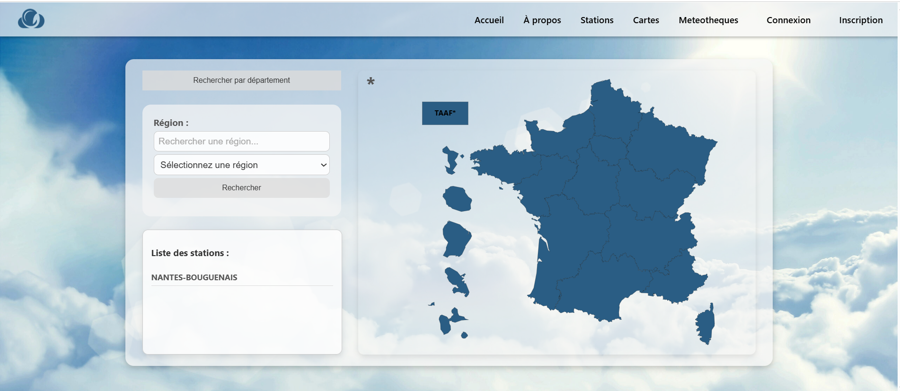
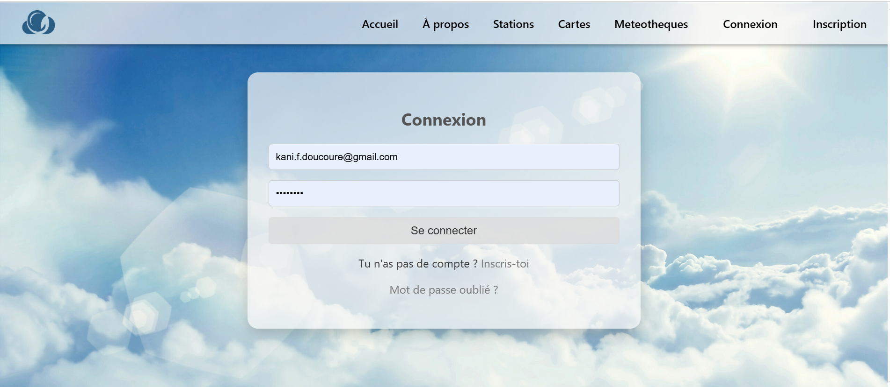

Application & Base de données météo
Création et exploitation d'une base de données météorologique avec architecture MVC.
ProblèmeIntégrer et exploiter les données météo de l'API SYNOP de façon lisible.
SolutionApplication MVC avec gestion de comptes, tableaux de bord dynamiques et carte interactive.
RésultatApplication complète avec authentification, visualisation et données temps réel.
PHPMySQLWampServerJavaJavaScriptHTML/CSS